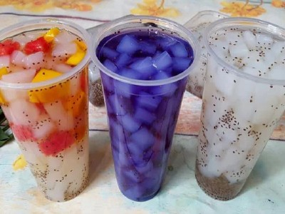

|  |
Food's name: Coconut jelly▸ Ingredients:
▸ Time to prepare: 60 minutes ▸ Approx quantity: 1 medium sized cup |
▸ Detailed recipe:
Step 1: Soak Raw Jelly:
- You soak the raw jelly in water, wash it several times to reduce the sour taste and smell.
Wash the jelly while squeezing it to make the embryo expand and clean.
- Next, you soak the jelly in water for 30 minutes until the jelly expands. You should wash the jelly with boiling
water to cool because the dried jelly expands to absorb the clean water, it will be better for health.
Step 2: Cook Jelly:
- The next step of cooking coconut jelly is to boil the jelly in boiling water and then rinse it with water again.
At this time, the jelly has enough water, no sour smell.
Step 3: Cook Sugar Sugar Water:
- You put rock sugar in a pot and bring to a boil with 200ml of water. Heat the sugar on low heat until the sugar
is completely dissolved, then remove the cooked jelly and cook with it. When cooked with alum sugar, coconut
jelly will have a naturally sweet taste. About 15 minutes later, turn off the heat and let the mixture cool.
Step 4: Finishing the Finished Product:
- After the jelly has cooled, you put the jelly and broth into the glass. Add ice cubes and toppings to your liking.
If you like to add more flavor of coconut oil, about 1-2 drops is medium, if you add a lot, the jelly will have a bitter taste.
*How to Color Coconut Jelly:
You can color coconut jelly from natural ingredients such as:
- Purple: 10 leaves (washed, drained).
- Red: Beetroot or red dragon fruit.
- Blue: 5-7 petals of butterfly pea.
- Passion fruit flavor: 1 glass of passion fruit juice.
- Pineapple flavor: juice of 1 ripe pineapple.
=> So you've got yourself a delicious cup of coconut jelly, now raise your glass and enjoy.
▸ Calories and related information: